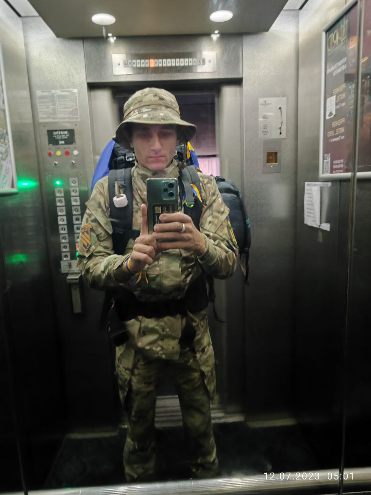
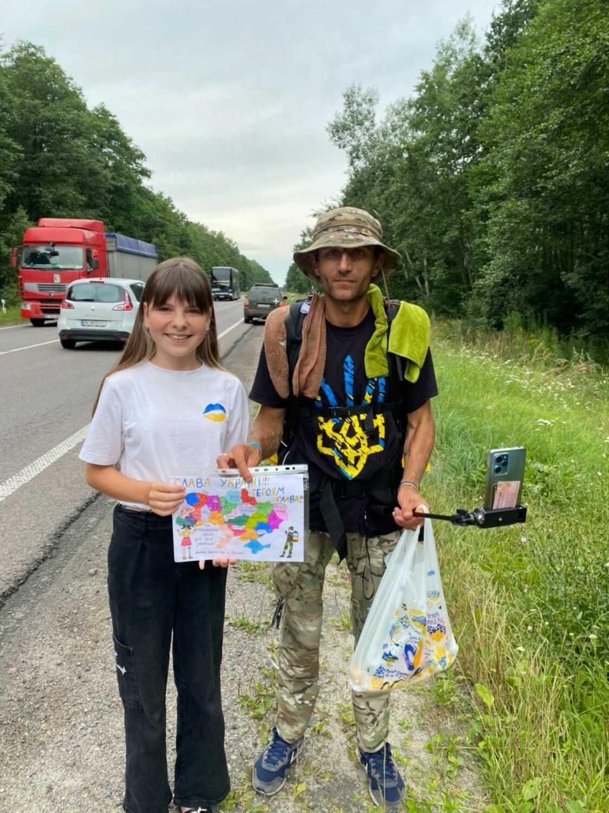
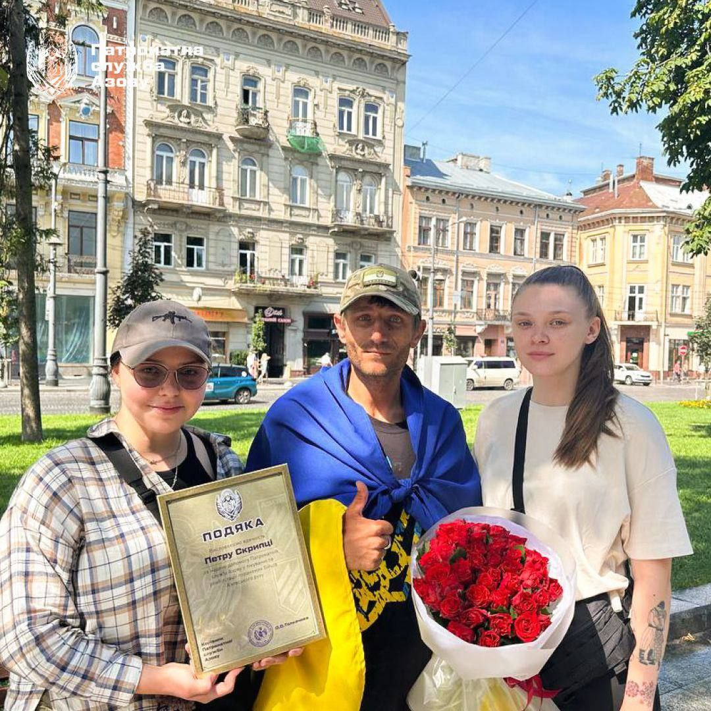
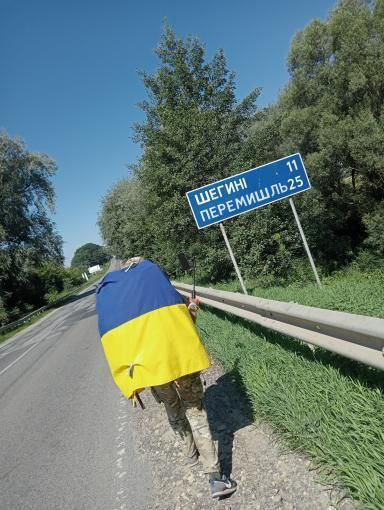
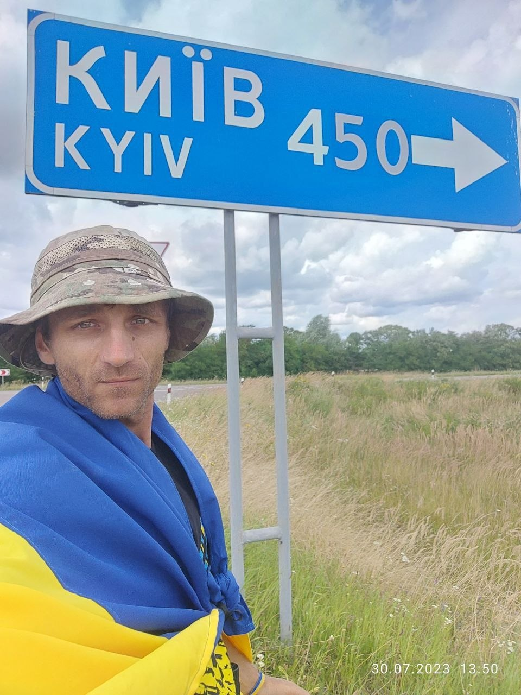
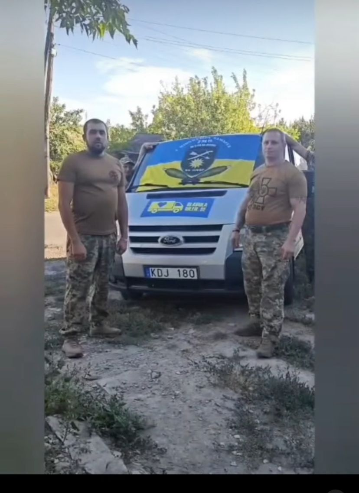
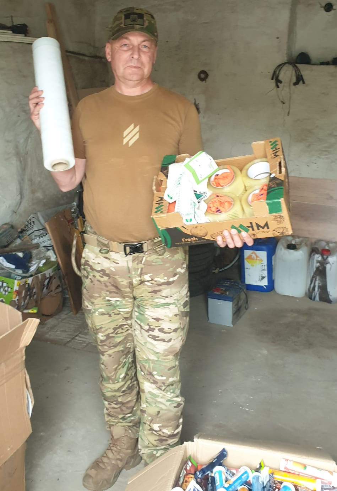
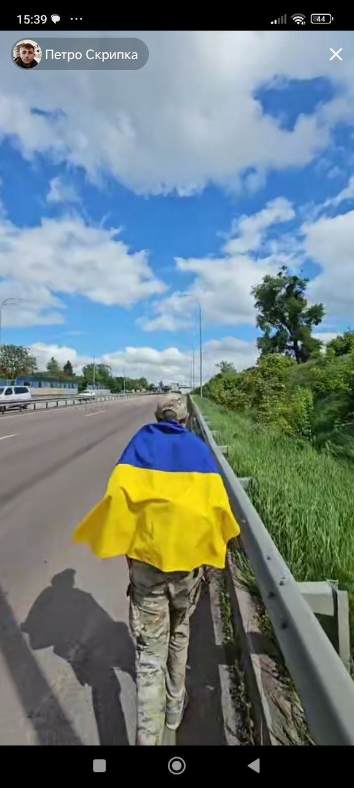

Благодійний фонд Петра Скрипки
Допомога військовим, цивільним і дітям, які постраждали від війни. Разом ми можемо більше.
Про фонд
Я — Петро Скрипка, ветеран, волонтер і засновник благодійного фонду. Після служби я продовжив боротьбу вже в гуманітарному напрямку.
Фонд допомагає військовим, цивільним, дітям і родинам, які постраждали від війни. Ми організовуємо збори, передаємо техніку, транспорт, дрони, медичну допомогу та інші необхідні речі.

Основні результати допомоги
- 1,6 млн грн — зібрано на протезування військових у 2023році.
- 950 тис. грн — придбано авто для побратимів із 3-ї окремої штурмової бригади у 2024році.
- 200 тис. грн — закуплено окуляри для FPV-дронів, антени та РЕБ для 3-ї штурмової бригади 2023-2024р.
- 700 тис. грн — закуплено FPV-дрони для різних бригад і підрозділів під час пішого марафону Івано-Франківськ - Умань.
- На 4,1 млн грн — передано допомоги за 2025 рік.
Як допомогти
Ви можете підтримати нашу діяльність фінансово, інформаційно або речами, які потрібні для військових та цивільних.
Фінансова допомога
Підтримайте актуальні збори фонду через перевірені платіжні посилання.
Передача речей
Авто, дрони, техніка, медицина, одяг, продукти та інші необхідні речі.
Інформаційна підтримка
Поширюйте інформацію про фонд, збори, звіти та нашу діяльність.
Фото /Історії
Тут можна показати фото діяльності фонду, благодійних маршрутів, допомоги військовим і медіа-матеріали.









Звіти та публікації
Додавайте сюди новини, сюжети, інтерв’ю, офіційні звіти та посилання на медіа.
Контакти та соцмережі
Зв’яжіться з нами або слідкуйте за діяльністю фонду в соціальних мережах.